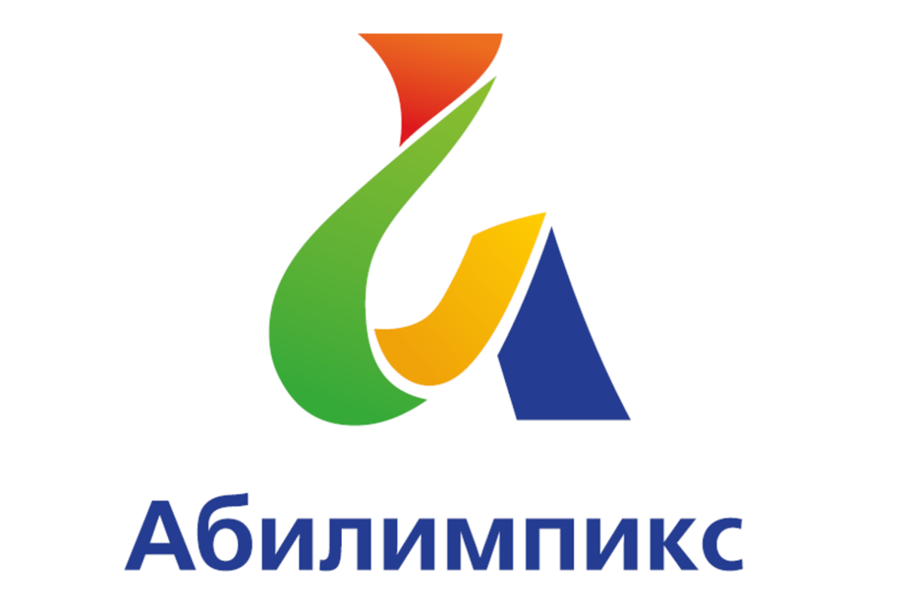
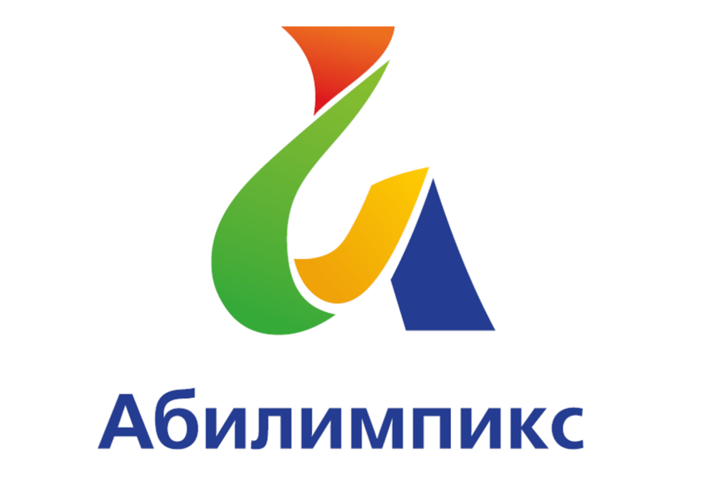

Чем мы занимаемся?
Центр компетенций является структурным подразделением учебно-методического комплекса.
 

Центр компетенций является структурным подразделением учебно-методического комплекса.
Повышение уровня мотивации к профессиональному самоопределению, личностному и профессиональному росту.
Повышение престижа рабочих профессий.
Повышение качества реализации основных профессиональных образовательных программ.
Формирование системного подхода к развитию в учреждении движения «Молодые профессионалы» «Worldskills Russia», организация мероприятий по стандартам Worldskills различного уровня.
Формирование системного подхода к развитию в учреждении движения «Абилимпикс», организация мероприятий для людей с ограниченными возможностями и инвалидов.
Развитие экспертного сообщества в учреждении, координация его деятельности.
Сопровождение проведения демонстрационных экзаменов по стандартам Worldskills.
Анализ и обобщение результатов работы по участию учреждения в мероприятиях по стандартам Worldskills.